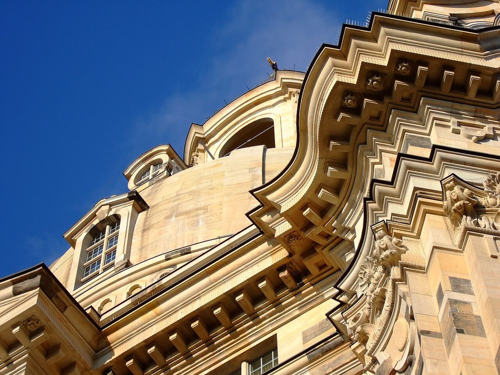

Descubre la impresionante Frauenkirche de Dresde

La Frauenkirche de Dresde, conocida como la 'Iglesia de Nuestra Señora', es uno de los monumentos más emblemáticos de Alemania y un símbolo de paz y resiliencia. Esta impresionante iglesia barroca, ubicada en el corazón de la ciudad de Dresde, atrae a visitantes de todo el mundo gracias a su fascinante historia y su arquitectura deslumbrante. Si estás planeando un viaje a Dresde, aquí tienes todo lo que necesitas saber para disfrutar al máximo de la Frauenkirche.
Historia de la Frauenkirche
La Frauenkirche fue construida en el siglo XVIII y se convirtió en un punto de referencia en el horizonte de Dresde. Durante la Segunda Guerra Mundial, la iglesia fue destruida por los bombardeos aliados en 1945, quedando en ruinas durante décadas. Tras la reunificación de Alemania, se inició un ambicioso proyecto de reconstrucción que culminó en 2005. Hoy, la Frauenkirche no solo es un hito arquitectónico, sino también un poderoso símbolo de reconciliación y esperanza.
Cómo llegar a la Frauenkirche
La Frauenkirche está situada en el centro histórico de Dresde, lo que facilita su acceso. Si llegas en transporte público, puedes tomar un tranvía o un autobús hasta la parada 'Altmarkt'. Desde allí, es una corta caminata hasta la iglesia. Si prefieres viajar en coche, hay varios aparcamientos cercanos, aunque el tráfico en el centro de la ciudad puede ser intenso. Otra opción es llegar caminando si te hospedas en el centro; la Frauenkirche es un punto destacado en cualquier paseo por Dresde.
Mejor época para visitar
La Frauenkirche es un destino que puedes visitar durante todo el año, pero la mejor época para disfrutar de Dresde es en primavera y otoño, cuando el clima es suave y la ciudad está menos concurrida. Durante el invierno, el mercado navideño frente a la iglesia crea un ambiente mágico, aunque las temperaturas pueden ser frías. Evita los días festivos importantes, ya que suele haber más turistas.
Holzfällerzunft Dresden Highlights de la visita
Al visitar la Frauenkirche, no te pierdas estos imprescindibles:
- El interior de la iglesia: El diseño interior es impresionante, con decoraciones barrocas y una cúpula que ofrece una acústica excepcional. Si tienes la oportunidad, asiste a un concierto o servicio religioso para experimentarlo.
- La cúpula: Sube a la cúpula de la Frauenkirche para disfrutar de unas vistas panorámicas de Dresde. Es un esfuerzo que vale la pena, ya que podrás ver el río Elba y otros puntos destacados de la ciudad.
- El memorial: En el sótano de la iglesia, encontrarás un memorial que rinde homenaje a la destrucción y reconstrucción de la Frauenkirche. Es un espacio emotivo que refleja la importancia histórica del lugar.
- La plaza exterior: Tómate un momento para admirar el exterior de la iglesia y su plaza, donde a menudo hay músicos callejeros y un ambiente animado.
Dónde comer cerca de la Frauenkirche
Después de explorar la Frauenkirche, puedes disfrutar de la gastronomía local en los restaurantes cercanos. En el centro histórico de Dresde encontrarás opciones que van desde comercios tradicionales hasta restaurantes modernos. Prueba platos típicos como el 'Sauerbraten' (estofado de carne) o el 'Quarkkeulchen' (postre de queso). Si prefieres algo rápido, hay varios cafés y puestos de comida donde puedes tomar un tentempié.
Consejos adicionales
Para aprovechar al máximo tu visita, considera llegar temprano para evitar las multitudes, especialmente si planeas subir a la cúpula. Lleva calzado cómodo, ya que hay que caminar bastante. Si viajas con niños, explícales la historia de la iglesia para que comprendan su significado. Finalmente, no olvides llevar una cámara: la Frauenkirche es un lugar fotogénico que seguro querrás capturar.
La Frauenkirche de Dresde es mucho más que una iglesia; es un testimonio viviente de la resiliencia humana y un lugar lleno de belleza y significado. ¡No te la pierdas en tu próximo viaje a Alemania!
Haiktec
- Guía de Viaje y Presupuesto para NRW: Planificador de Ruta, Gastos y Actividades
- Descubre Baviera y los Alpes: 7 Rutas Esenciales para Viajeros Masculinos
- Planificador de Exámenes y Seguimiento de Progreso para Estudiantes Universitarios
Text mit KI erstellt und automatisch geprueft.